NOTA: Es necesario resaltar que el sistema esta aún en etapa de desarrollo y todo puede mejorarse. si tiene dudas o sugerencias puede contactarse con los desarrolladores en:...;
El sistema está desarrollado con PHP orientado a objetos y Mysql como gestor de bases de datos. Está compuesto por una serie de módulos principales que se complementan y permiten la utilización de otros módulos secundarios. En caso de no contar con un módulo en específico, este puede ser reemplazado por otro de funcionalidad similar, solo si es compatible, haciendo el sistema más flexible para los programadores.
También cuenta con una serie de herramientas que harán más fácil la producción de aplicaciones web dentro de este, actuando también como framework y teniendo la posibilidad de poder acceder a la base de datos de manera similar a un gestor de contenidos u otro framework similar, pero con la posibilidad de crear extensiones dinámicamente. De esta manera, se garantiza la flexibilidad en el código siempre y cuando se utilice las clases que el sistema aporta o creando nuevas siguiendo el patrón de desarrollo del mismo. La estructura de las clases está basada en un patrón de código que se puede seguir para facilitar la creación de nuevos módulos y así ampliar el campo de posibilidades a la hora de realizar código.
El sistema cuenta con dos archivos principales que reciben prácticamente toda la información que entra y sale en el sistema. Uno de los archivos es el “index.php” ubicado en la carpeta raíz de la instalación del sistema, todas las peticiones (salvo algunas excepciones) son redirigidas directamente a este, mediante otro archivo que se encarga de esta redirección (“.htaccess”), que las captura e interpreta de distinta manera según la configuración deseada. En el archivo se incluyen las dos clases principales: Rutas y Database.
La clase Rutas recibe y procesa los datos de la URL, y la procesa para devolver al usuario la página, también llamada “vista”, indicada. Las vistas mostradas pueden obtener información anteriormente almacenada en una base de datos mediante la clase Database. Esta incluye varios métodos para enviar o recibir información alojada en el servidor, como por ejemplo, Información de los usuarios, o de una sección de noticias.
La clase Database contiene una serie de funciones útiles para el funcionamiento del sistema y para el desarrollo íntegro de un nuevo módulo, utilizándose para agilizar el desarrollo a la hora de comunicarse con la base de datos.
Ya teniendo estas dos clases de uso general, las demás clases pueden funcionar correctamente e integrarse de manera que puedan funcionar en conjunto.
Para instalar el sistema deberemos disponer básicamente de un servidor con soporte de PHP y Mysql.
Primero debemos subir los archivos del sistema al servidor y modificar el archivo “.htaccess”.
RewriteEngine on
RewriteBase /directorio_instalacion
RewriteCond %{REQUEST_URI} !/directorio_instalacion/contenido/
RewriteCond %{REQUEST_FILENAME} !.*jpg$|.*gif$|.*png$|.*css$|.*js$|.*svg$|.*ttf$|.*woff$|.*woff2$|.*eot$
RewriteRule ^(.*)$ index.php?route=$1 [QSA,NC,L] Donde “/directorio_instalacion” es el directorio base del sistema.
Luego será necesario crear una nueva base de datos. La información de conexión de la misma debe ser actualizada en el archivo “database.php” ubicado en la carpeta “config” en el directorio de instalación, o “/config/database.php”.
return array(
"host" => "host_mysql",
"user" => "usuario_db",
"pass" => "pass_db",
"database" => "nombre_db",
);
Donde “host_mysql” es el nombre del servidor de la base datos. “usuario_db”, el nombre de usuario, “pass_db” la contraseña y “nombre_db” el nombre de la base de datos. Tambien deberá importarse a la base de datos el archivo "mysql_db.sql", ubicado en el directrio base del sistema, que contiene las configuraciones básicas de los módulos incluidos.
Una vez importada la base de datos es importante modificar el campo "url" en la tabla "config" con la dirección del sitio usando algun software como PhpMyAdmin.
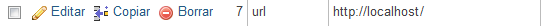Despues de realizado todo el procedimiento el sistema debería ser accesible desde el navegador web ingresando la dirección del servidor donde fue instalado.
NOTA: Tambien debería poder ser posible ingresar al panel de administrador en la dirección de logueo default "/login" con los datos de sesión por defecto incluidos en la base de datos. Usuario: admin Contraseña: admin
En este simple manual se pretende explicar el funcionamiento basico del sistema, sus módulos y configuraciones generales para cualquier usuario con o sin conocimientos en programación. Dividido en # ←(reemplazar por numero de secciones) secciones para facilitar su comprensión se intentara explicar los conceptos basicos que cualquier usuario debe tener para utilizar correctamente el sistema.
Los siguientes conceptos serán utilizados en el manual y se daran por entendios.
El dashboard es la página donde los usuarios administradores tienen acceso y control sobre la información del sistema y sus usuarios. Pueden agregar, modificar o eliminar datos en el sitio. Tambien pueden personalizar la página principal instalando nuevos temas o complementos.
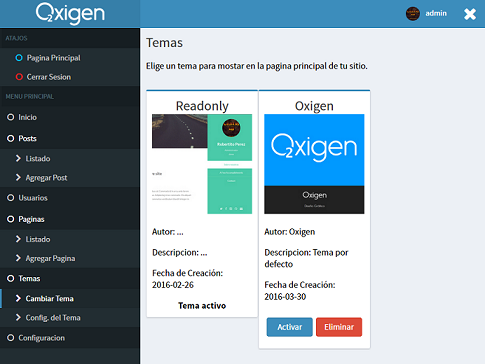Una de las vistas del dashboard
Para ingresar al panel de administración deberemos contar con una cuenta de administrador. Por defecto el usuario y la contraseña son "admin". Luego en nuestro navegador ingresamos a la dirección "/login" precedido de la de nuestro sitio. Por ejemplo: "www.misitio.com/login".
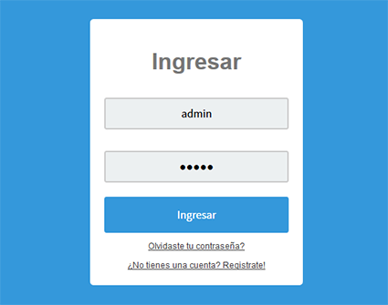El dashboard esta dividido en tres partes principales. La vista central (1), la barra superior (2) y el menú principal (3).
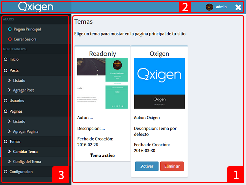1. En la vista central se muestra toda la información sobre los usuarios, publicaciones, temas y demas configuraciones del sitio. En esta vista se puede consultar y modificar toda la información que visualizan los usuarios, si se tienen los permisos adecuados (como una cuenta de administrador).
2. En la barra superior se puede apreciar el nombre del usuario que ingreso al dashboard y el logotipo del sitio que puede ser modificado en cualquier momento desde la página de configuraciones.
3. El menú principal contiene una lista de opciones para ver o modificar información referida a los usuarios y al sitio web en general y tambien una pequeña lista de "atajos" para cerrar sesión o dirigirse a la página principal del sistema de forma mas rapida.
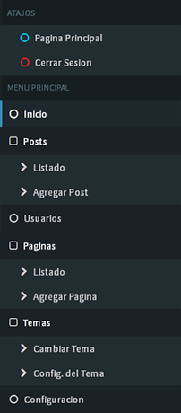Una de las maneras de mantener actualizado un sitio es hacer publicaciones regularmente, Generalmente estas publicaciones se muestran en la página principal para ser leidas por los usuarios.
Estas publicaciones pueden ser realizadas por cualquier usuario Adminsitrador desde el dashboard.
Una vez hayamos ingresado al dashboard, debemos dirigirnos al menu principal. En el submenú de Posts, se encuentran opciones para crear y modificar, de manera sencilla, publicaciones en general en el sitio. Bastará con ingresar a la sección "Agregar post", para ingresar a la página correspondiente.
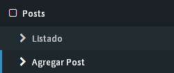Al ingresar, verá algo similar a esto:
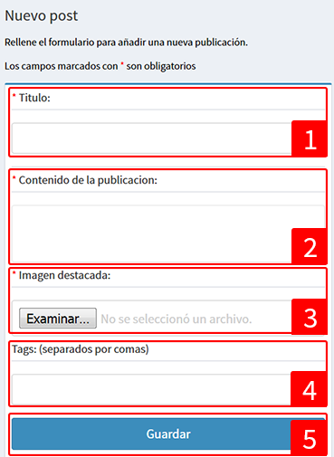Existen diferentes entradas de texto e imagen que servirán para capturar la información y guardarla en una nueva publicación, para ser mostrada a los usuarios.
Para modificar o eliminar una publicación creada anteriormente, se debe ingresar al listado de publicaciones en el submenú "Listado" del menú "Post".
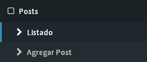Una vez en la página "Listado de posts"...
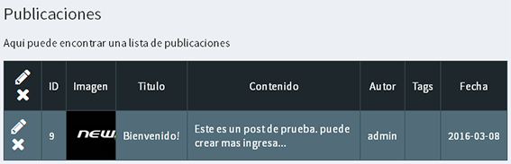... se muestra una tabla con los datos de las publicaciones en el sitio.
Para eliminar una publicación debe presionar el boton correspondiente a la publicación que quiera eliminar.
NOTA: Tenga en cuenta que una vez eliminado NO podra recuperar la información de esa publicación
Para modificar una de las publicaciones hay que presionar el boton correspondiente a la publicación que quiera modificar y sera dirigido a la página de edición de posts.
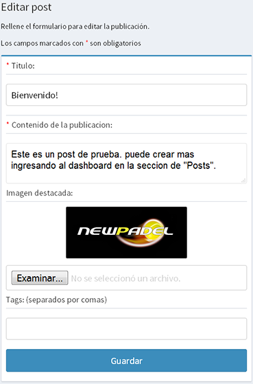El proceso para editar la publicación es practicamente el mismo que para agregar un nuevo post. Simplemente se deben completar los campos con los datos deseados y presionar el botón guardar.
NOTA: Una vez modificada la publicación NO sera posible revertir los cambios realizados.
Todos los usuarios registrados en el sitio poseen un nombre de usuario, una contraseña y otros datos que determinan sus privilegios sobre el sistema y otros usuarios.
Los usuarios "Administrador" cuentan con control total sobre la configuración y pueden acceder al dashboard para modificar toda la información del sitio.
El resto de los usuarios, los usuarios normales, no pueden acceder al dashboard, pero pueden acceder a privilegios especiales para usuarios registrados en el el sitio, que serían inaccesibles sin una cuenta de usuario.
Desde el dashboard los administradores pueden gestionar todas las cuentas de usuarios en el sitio. Pueden, desde modificar la información de los usuarios, hasta eliminar o crear nuevas cuentas de administrador.
Para crear una nueva cuenta de usuario podemos acceder directamente a la página de registro del sistema ("/reg") si mantenemos el registro abierto para cualquier usuario.
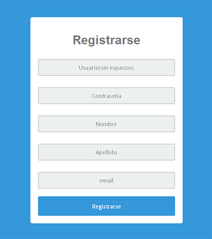En caso de no permitir el registro a todos los usuarios o tener la necesidad de crear un nueva cuenta de administrador, deberemos ingresar al dashboard, seleccionar el menu "Usuarios"...
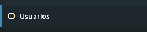...e inmediatamente seremos redirigidos a la página de gestión de usuarios.
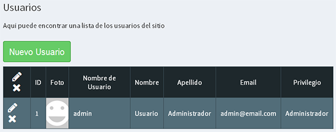En la página de gestión de usuarios, se puede observar una lista de usuarios. Si aún no modificamos ningun usuario, sólo existirá en la lista el usuario por defecto con privilegios de administrador.
NOTA: Es importante destacar que solo se pueden crear usuarios con privilegio igual o inferior a la del usuario actual.
Para crear un nuevo usuario, simplemente haz click en el botón “Nuevo usuario” 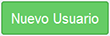 para ir a la página de creación de usuarios.
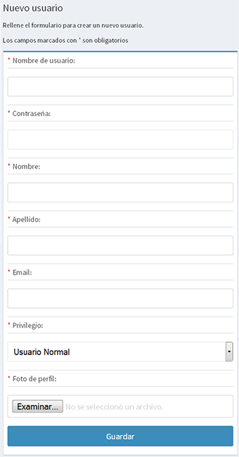Ahora solo se debe completar el formulario con los datos correspondientes y presionar el botón guardar. De esta manera, el usuario ya debería estar registrado en el sistema, pudiendo acceder a contenidos exclusivos para los usuarios registrados.
Para eliminar un usuario, una vez en la página de gestión de usuarios, debe presionar el botón correspondiente a la cuenta de usuario que quiera eliminar.
NOTA: Tenga en cuenta que una vez eliminado NO podrá recuperar la información de ese usuario.
Para modificar los datos o privilegios de un usuario hay que presionar el botón correspondiente al usuario que quiera modificar y será dirigido a la página de edición de usuarios.
El proceso para editar el usuario es prácticamente el mismo que para agregar un nuevo usuario. Simplemente se deben completar los campos con los datos deseados y presionar el botón guardar.
NOTA: Una vez modificada el usuario NO será posible revertir los cambios realizados.
Las páginas son secciones especiales que se muestran en la página principal del sistema. algunas de estas secciones pueden contener datos de contacto, informacion, galerias de fotos o cualquier otra cosa que quiera agregar en ellas.
Estas páginas funcionan de manera muy similar a los posts, y la forma de crear, modificar o eliminarlas es muy similar a la de las publicaciones.
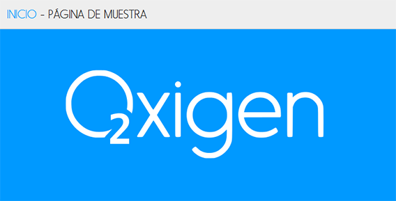Ejemplo de una página en el tema "Oxigen" donde "Página de muestra" es un enlace a una página.
Para crear una nueva página ingresamos al menu "Agregar Página".
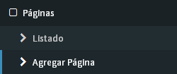Una vez en la sección de creación de páginas rellenamos los campos con los datos deseados y guardamos.
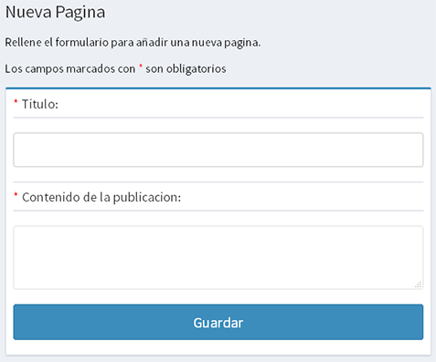Para ver la lista de páginas publicadas en el sistema nos dirigimos al submenú "listado" en el menú "Páginas"
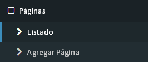Una vez que haya ingresado a la sección verá una pagina similar a la siguiente.
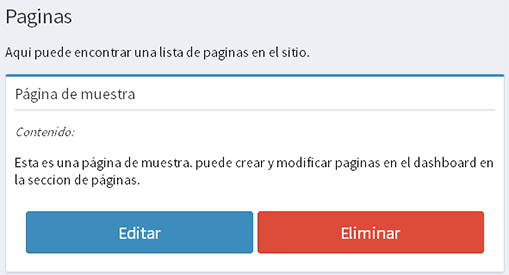El funcionamiento es muy simple y muy similar al resto de las opciones del dashboard. Para Eliminar una pagina simplemente debemos presionar el boton "Eliminar".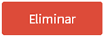
Para modificar una publicación pulsamos el boton "Editar".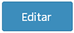
En la pagina de edición completamos se deben completar los campos y puslar en el boton "Guardar".
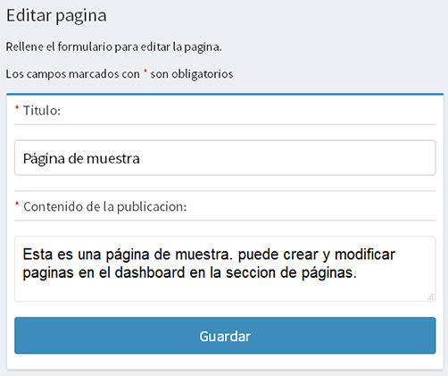